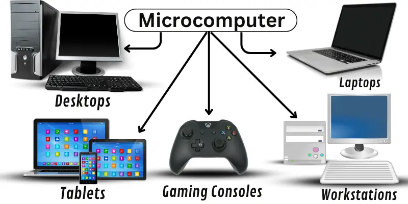

Portfolio #6: Comparative Study on Different Types of Computers
Computers come in various types, each designed to perform specific tasks depending on their processing power, size, and usage. From large-scale systems like supercomputers used in scientific research to small personal computers used in daily life, each type plays a vital role in society. Understanding their differences helps us appreciate how technology evolves to meet different computational needs in business, education, science, and communication.
Different types of computers vary in capacity, architecture, and purpose. Supercomputers are the most powerful, performing trillions of calculations per second, mainly for scientific research and weather forecasting. Mainframe computers handle massive data processing for institutions like banks and government agencies. Mini computers or mid-range computers serve small organizations for business transactions and process control. Servers provide services and data to multiple users or devices over a network. Workstations are high-performance computers designed for technical or scientific applications, while microcomputers, or personal computers, are commonly used by individuals for everyday tasks.
Each category differs in processing speed, memory capacity, power consumption, and field of use, reflecting how computing technology adapts to user needs.
Comparative Study of Different Types of Computers
| Types of Computers | Name / Brand | CPU | Memory | Processing Speed | Calculating Power | Working Principle | Energy Consumption | Field of Use |
|---|---|---|---|---|---|---|---|---|
| Supercomputer | Fugaku (Japan) | ARM A64FX 48-core CPU | 32 GB per node | 442 PFLOPS | Up to 10¹⁵ FLOPS | Processes massive parallel computations simultaneously | Very High (30 MW+) | Climate modeling, nuclear simulations, AI research |
| Mainframe Computers | IBM z16 | IBM Telum Processor | Up to 40 TB | Up to 4.5 GHz, multiple processors | Up to billions of instructions per second (BIPS) | Handles multiple transactions simultaneously | High | Banking, airline reservation, government data processing |
| Mini Computers | DEC PDP-11 | 16-bit CPU | 4 KB – 4 MB | 1–3 MIPS | Moderate | Executes multi-user business processes | Moderate | Small business data processing, manufacturing control |
| Server | Dell PowerEdge R760 | Intel Xeon Scalable Processor | 64–2048 GB RAM | Up to 4.8 GHz, up to 32 cores | High | Manages data and resources for networked devices | Moderate to High | Website hosting, enterprise applications |
| Workstations | HP Z8 Fury G5 | Intel Xeon W9-3 495X | Up to 2 TB | Up to 4.8 GHz, 56 cores | High | Designed for high-end graphics and computations | Moderate | Engineering, animation, 3D modeling |
| Micro Computers | Apple MacBook Pro (M3) | Apple M3 chip (8-core CPU) | 8–24 GB | Up to 4.1 GHz | Low to Moderate | Performs single-user applications | Low | Education, home use, office tasks |
Types of Computers, Description, and Usage
| Types of Computers | Sample Image | Description | Usage |
|---|---|---|---|
| Supercomputer |

|
The most powerful computer capable of complex computations. | Weather forecasting, scientific simulations. |
| Mainframe Computers |

|
Large and powerful system used for centralized data processing. | Banking systems, census data. |
| Mini Computers |

|
Medium-sized, multi-user system. | Small business operations. |
| Server |

|
Provides services and manages resources for clients. | Web hosting, cloud services. |
| Workstations |

|
High-performance computer for professional tasks. | Engineering design, 3D rendering. |
| Micro Computers |  | Personal computer for general use. | Education, communication, entertainment. |
Compare and Contrast
| Category | Mini Computer | Micro Computer | Workstation | Server |
|---|---|---|---|---|
| Processing Speed | Moderate | Low to Moderate | High | High |
| Memory Capacity | 4 MB – 64 MB | 4 – 64 GB | Up to 2 TB | Up to 4 TB |
| Power Consumption | Moderate | Low | Moderate | High |
| Minimum Cost | Expensive | Affordable | More expensive | High cost |
| Usage | Small businesses, process control | Personal use, education | Scientific or design tasks | Data management, network services |